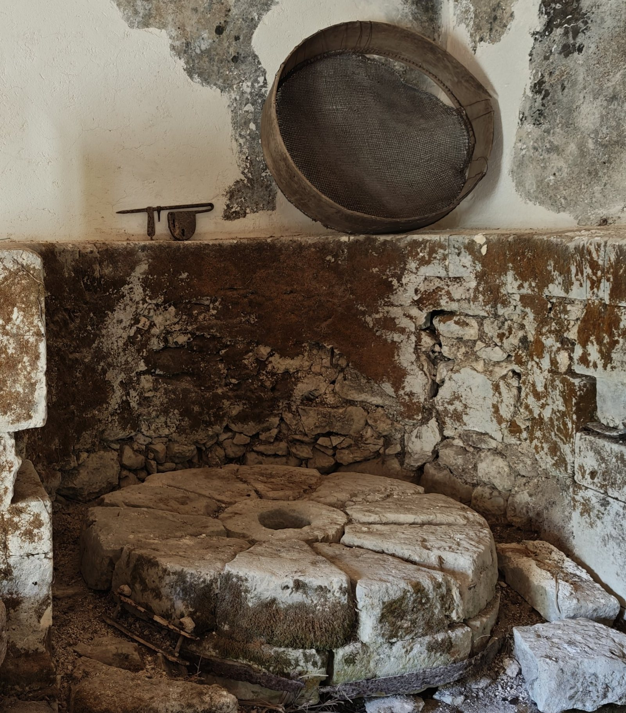
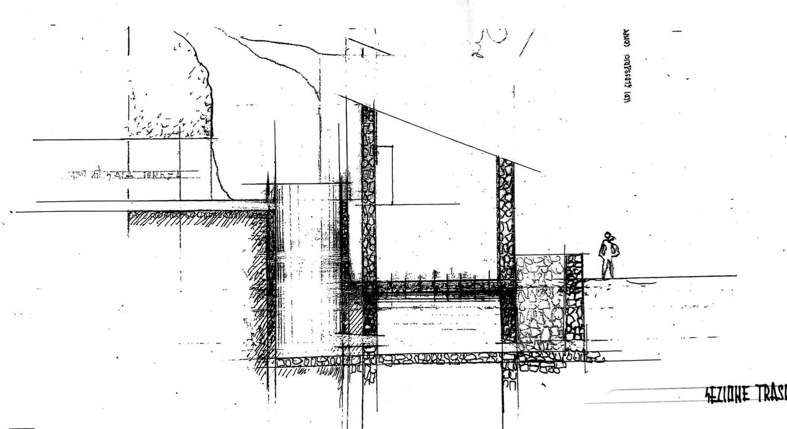
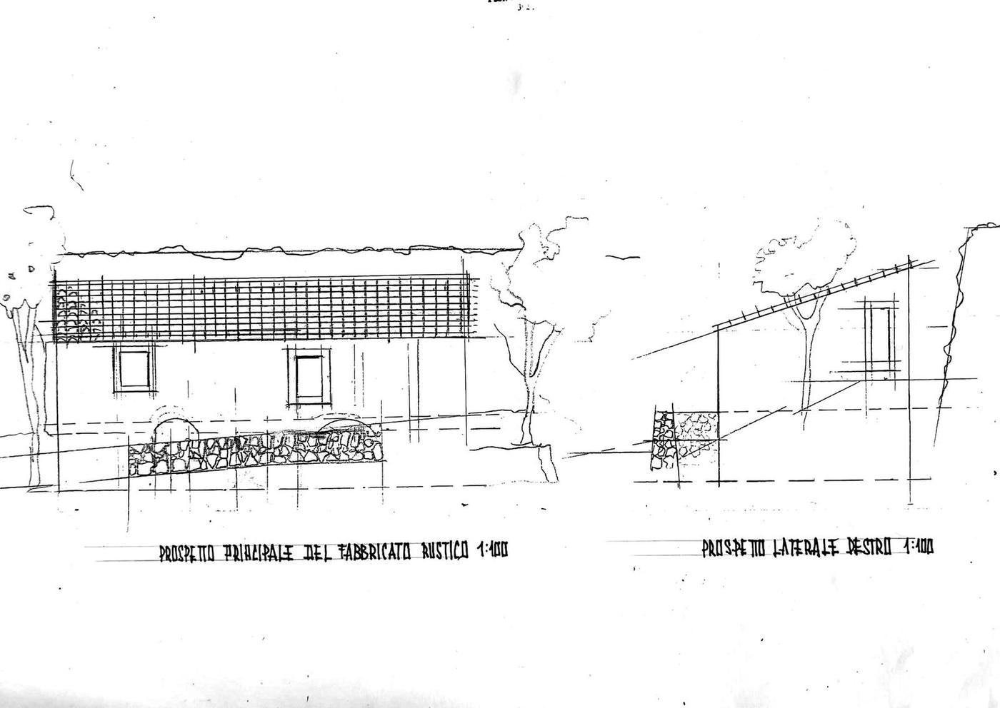
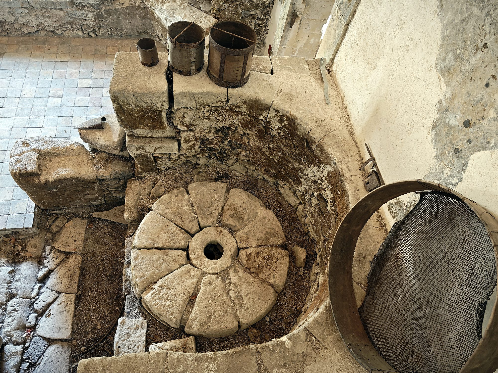
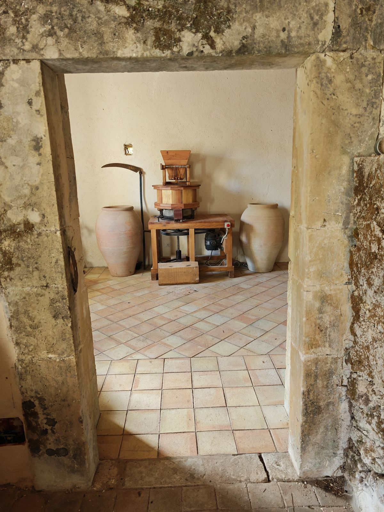
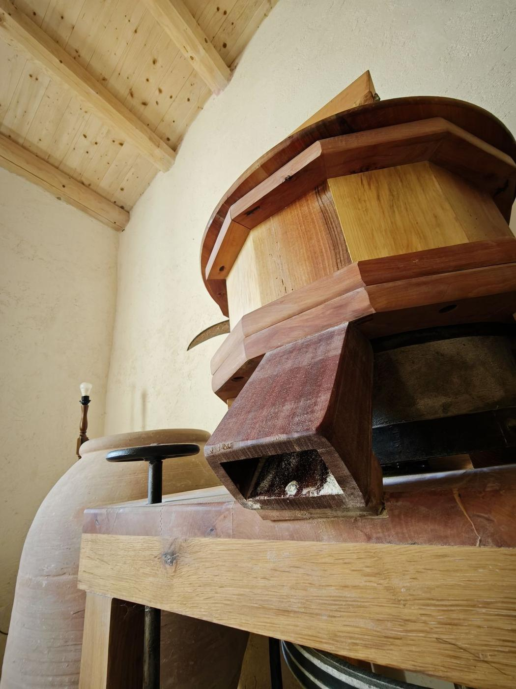
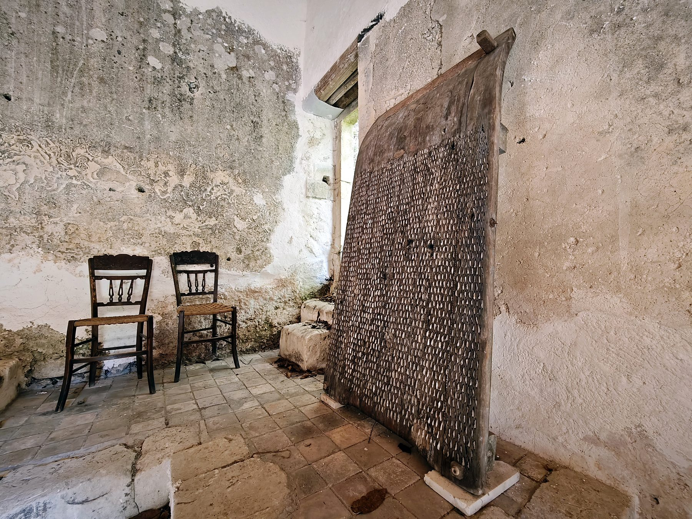

The first sack of wheat
returns to the old mill
after 150 years.

Behind the wall and the gate.
This is how the mill stood for decades: roofless, closed behind an iron gate and a long dry stone wall. The drawing behind shows it in section, measured by hand before the restoration.
The old stone
Under the soil, then cleaned by hand. Slide to see it come back to light.
Built where the water fell.
The building we see dates from the 1700s, over foundations of far older origin, Roman and perhaps Greek. The water once fell behind the wall, turned the stone and left through an arch. Today it no longer flows, and the stones rest. Before anything was moved, the mill was measured and drawn by hand.
EXPLORE THE WATER MILL →



Turning again, since 1956.
In an empty room of the same house stands a second mill: an electric granite mill from 1956. It was bought broken, with rotting wood, and restored plank by plank in oak and chestnut. Its stones and mechanisms are original, and it turns only for educational demonstrations.
EXPLORE THE SUN MILL →


From ruin to restored mill.
Slide each photograph to move from before to after.


From the grain to the table.
In the educational laboratory of the mill, visitors follow durum wheat from the field to the stone, and learn how it becomes bread, pasta and pizza.
Tools of the wheat.
Objects of country life, kept where they were used: the board set with stones, the grain cleaner with its screw and sieve, the trough and the pick.
SEE ALL THE ARTEFACTS →


Funded by the European Union through Italy's National Recovery and Resilience Plan.